Hibridna arhitektura: najbolje od oba sveta sa Supabase i Spring Boot-om
Објављено 14 January 2026
Umesto da birate između prostote Supabase i moći Spring Boot, zašto ne kombinišete oba? Otkri hibridnu arhitekturu koja koristi najbolje iz svake tehnologije.
- тик
-
[]
- Lažna Dilema Moderne Arhitekture
- Arhitektonska vizija
- Principi dizajna
- Orkestracija tokova
- Matrica odlucke
- Примери архитектуре према типу пројекта
- Strategija progresivne migracije
- Troškovi i operativna razmatranja
- Zaključak : Savršeno ravnoteža
- Даље
- Perspektive evolucije
- Arhitektonska svjedočanstva
- Синтеза : модерни архитектонски парадигма
- Konačan zaključak
Lažna Dilema Moderne Arhitekture
Pri izradi moderne aplikacije sa statičkim frontendom, često se suočavamo sa binarnim izborom:
-
Svesti se na rešenje Backend-as-a-Service(Supabase, Firebase) - jednostavno, ali ograničeno
-
Izgraditi jedan kompletan backend(Spring Boot, Node.js) - moćan ali kompleksan
Ovaj izbor je lažni dilema. Hibridna arhitektura nudi treći put: koristiti svaku tehnologiju tamo gde izvrsno funkcionise
Arhitektonska vizija
Tradicionalna arhitektura: Monolitna
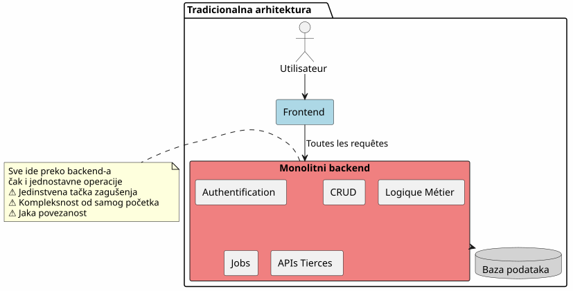
U ovom pristupu, čak i najjednostavnije operacije (čitanje članka, kreiranje komentara) moraju proći kroz vaš back‑end. Plaćate trošak kompleksnosti od prvog dana.
BaaS arhitektura: Svaki delegat
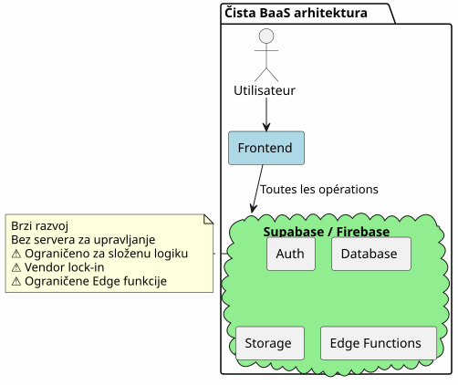
Naopako, sve delegiranje BaaS-u je na početku svodivo, ali brzo pokazuje svoje ograničenja kada se poslovna logika komplikuje.
Hibridna arhitektura: razdvojenje odgovornosti
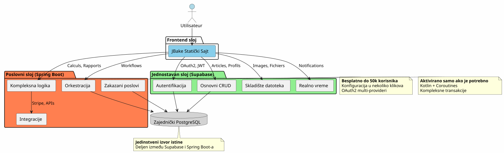
Hibridna arhitektura jasno razdvojuje odgovornosti po složenosti i prirodi operacija.
Principi dizajna
Princip 1: Početi jednostavno, razvijati se inteligentno
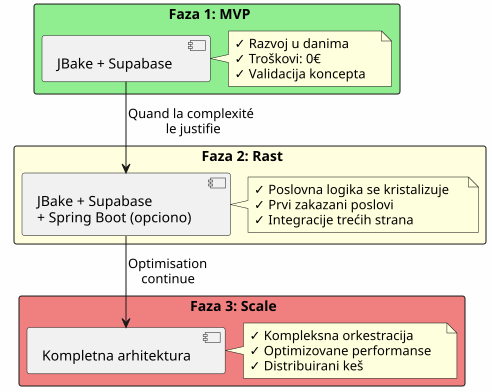
Ne gradite Spring Boot ako vam nije potreban.Počnite sa Supabase, dodajte Spring Boot kada je to podloženo složnošću.
Принцип 2 : Раздељење према природи операције

Princip 3: Jedini izvor istine
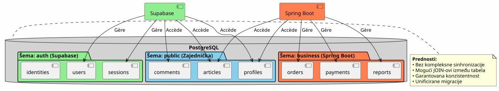
Koristeći istu PostgreSQL instancu, Supabase i Spring Boot rade na istim podacima bez kompleksne sinhronizacije.
Orkestracija tokova
Tok 1: Centralizovana autentifikacija
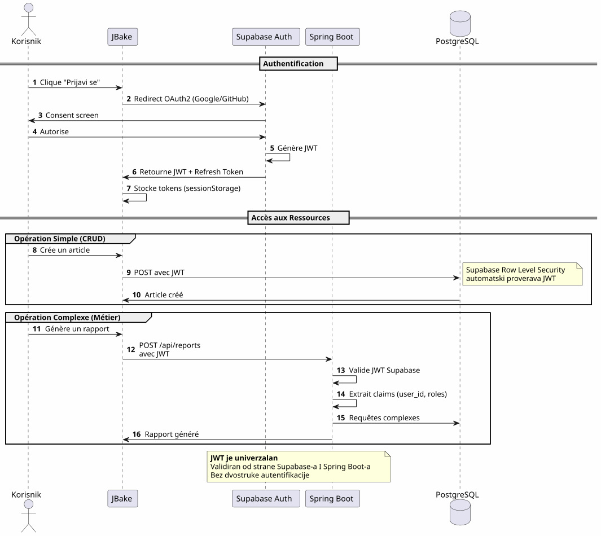
Ključna tačkaJedan proces autentifikacije, jedan JWT, koji se može koristiti svugde.
Flux 2 : Orchestracija kompleksnog poslovnog procesa
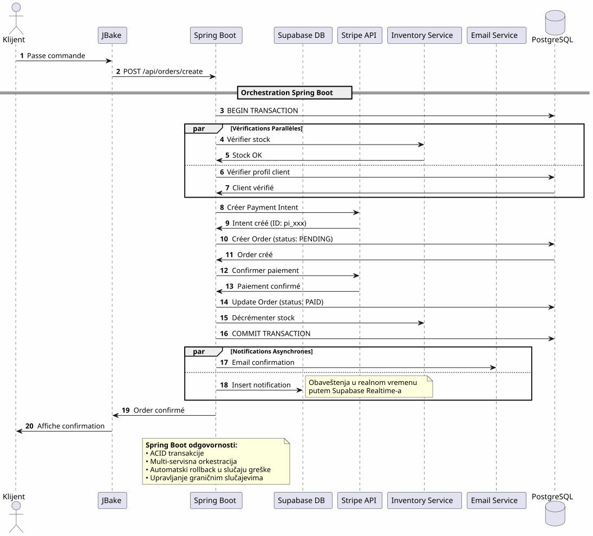
Šta Spring Boot donosiPouzdana orkestracija složenih procesa koji uključuju više sistema sa transakcionom garancijom.
Tok 3: Zakazani poslovi i sinkronizacije
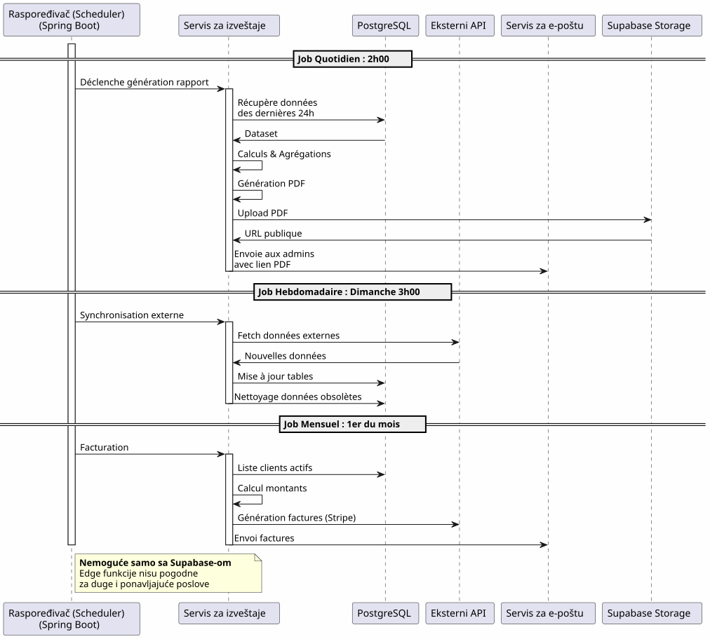
Šta pruža Spring Boot: Pouzdani zakazani poslovi sa upravljanjem stanjem, automatskim ponovnim pokretanjem i garantovanim izvršavanjem.
Matrica odlucke
Kada koristiti Supabase?

Kada koristiti Spring Boot?

Примери архитектуре према типу пројекта
Blog / Portfelj
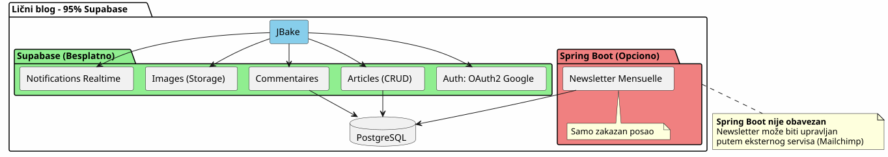
пресуда: 100% Supabase je sasvim dovoljno.
SaaS aplikacija
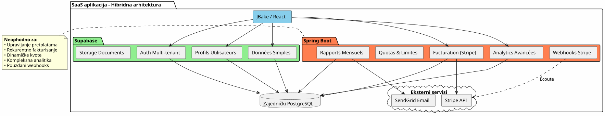
Presuda: Hibridna arhitektura je potrebna. Supabase za osnovno, Spring Boot za kritični deo (plaćanja, fakturiranje).
e-trgovina
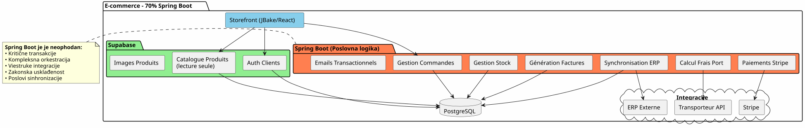
пресудаSpring Boot neophodan. Supabase samo za auth i katalog.
Strategija progresivne migracije
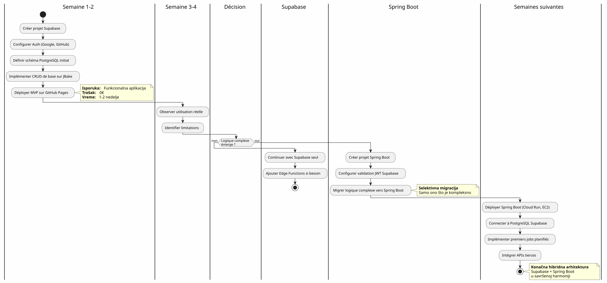
Troškovi i operativna razmatranja
Структура трошкова
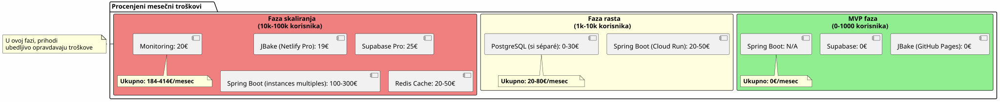
Operativne odgovornosti
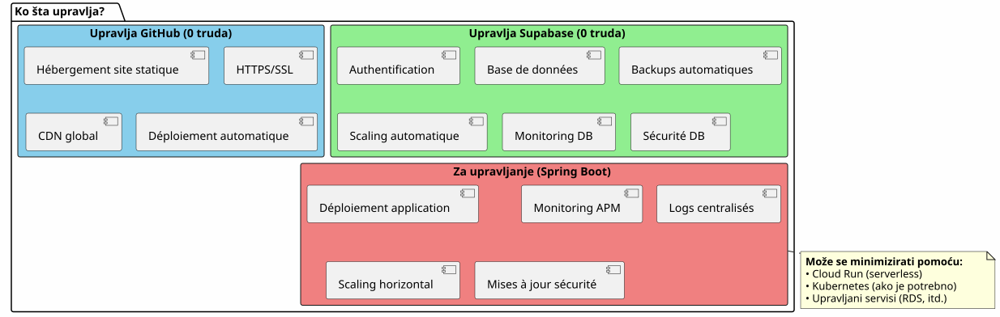
Zaključak : Savršeno ravnoteža
Hibridna arhitektura Supabase + Spring Boot nije kompromis, to jeсинергија.
Principi koje treba zapamtiti

Kada odabrati ovu arhitekturu?
✅ Ova arhitektura je idealna ako :
-
Želite da pokrenete brzo (MVP u danima, ne u mesecima)
-
Očekujete rast složenosti posla
-
Želite da smanjite početne troškove
-
Виолите PostgreSQL и желите један извор истине.
-
Волите Kotlin и корутине за пословни код.
-
Želite da spriječite potpuni vendor lock-in
❌ Ова архитектура НИЈЕ прилагођена ако:
-
Vaš projekat je jednostavan i ostane Tako (lični blog → 100% Supabase dovoljno)
-
Već imate uspostavljen backend stek koji kontrolisate
-
Vi preferiš tradicionalni monolit
-
Treba vam .NET, Python ili drugi backend jezik
Finalna globalna vizija
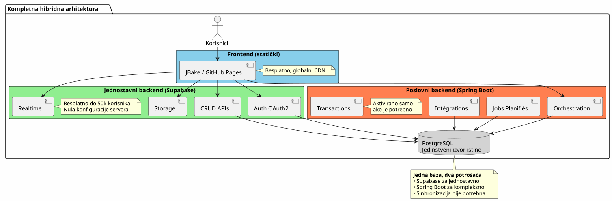
Najbolje iz oba sveta
Ova arhitektura vam daje :
🚀 Vločnost Supabase
-
Покретање у сатима, није у недељама
-
OAuth2 autentifikacija u nekoliko klikova
-
Automatski generisani REST API-ji
-
Nulta konfiguracija servera
💪 моћ Spring Boot
-
Kotlin и корутине за елегантан асинхронни код
-
Orchestracija složenih poslovnih procesa
-
Pouzdani zakazani poslovi
-
Garantirane ACID transakcije
-
Kompletan ekosistem Spring
💰 Progresivna Ekonomija
-
0€ za pokretanje i validiranje
-
Troškovi koji prate rast
-
Не прематурано претерано инжењерство
🎯 Архитектонска флексибилност
-
Progresivna migracija bez preoblikovanja
-
Додавање Spring Boot само ако је потребно
-
Нема укупног зависања од достављача
-
Evolutivna arhitektura
Даље
Tehnički resursi
Документација Supabase :
Документација Spring Boot :
Додатни чланци :
-
Zaštita API-ja sa JWT
-
Optimizacija performansi PostgreSQL
-
Uzorci progresivne migracije
-
Upravljanje greškama u distribuiranoј архитектури
Реални случајеви коришћења
Ova hibridna arhitektura se uspešno koristi u:
-
SaaS B2BSupabase аутентификација, Spring Boot фактурисање
-
Tržišta: Katalog Supabase, transakcije Spring Boot
-
Platforme sadržaja: Статеји Supabase, analytics Spring Boot
-
Unutrašnji alati: CRUD Supabase, workflows Spring Boot
Чек-лист за покретање
Faza 1 - Osnove (Nedelja 1)
-
Kreirati Supabase nalog - [ ] Konfigurisati projekt PostgreSQL - [ ] Omogući Auth (Google, GitHub) - [ ] Definisati početnu šemu - [ ] Konfigurisati Row Level Security - [ ] Testirati API-ove iz JBake
Faza 2 - MVP (sedmica 2-3)
-
Implementirati glavne stranice - [ ] Интегрирај OAuth2 аутентификацију - [ ] Kreirati obrasce CRUD - [ ] Konfigurisati Storage za datoteke - [ ] Razvrstaj na GitHub stranicama - [ ] Testirati u realnim uslovima
Faza 3 - evolucija (po potrebi)
-
Identifikovati potrebe složene logike - [ ] Креирај пројекат Spring Boot ако је потребно - [ ] Postaviti validaciju JWT Supabase - [ ] Повежи се на PostgreSQL Supabase - [ ] Migrirati kompleksne funkcionalnosti - [ ] Implementirati zakazane poslove - [ ] Деплојовати Spring Boot (Cloud Run, итд.)
Antipaterni obrasci koje treba da se izbegnu
❌ Ne praviti :
-
Duplicirati podatke između Supabase i Spring Boot
-
Kreirati dve odvojene PostgreSQL baze podataka
-
Kodirajte autentifikaciju sami
-
Koristiti Spring Boot za jednostavno CRUD
-
Prehitektovanjе od samog početka
-
Ignorisati Row Level Security Supabase-a
Радити уместо:
-
Deliti jedinu PostgreSQL bazu
-
Neka Supabase rukuje autentifikacijom
-
Користити Spring Boot само због сложености
-
Početi jednostavno, napredovati postupno
-
Iskoristiti snage svake tehnologije
-
Zaštiti na nivou baze podataka pomoću RLS
Perspektive evolucije
Dodavanje novih mogućnosti
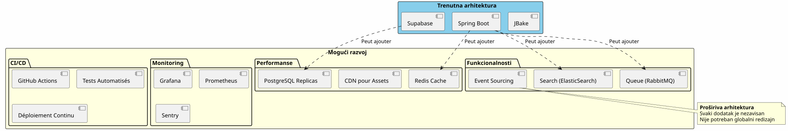
Horizontalno skaliranje
Kada vaša aplikacija raste, hibridna arhitektura se naturalno skalira :
Supabase :
-
Автоматски скалирајте до милиона операција
-
Read replicas za performanse čitanja
-
Point-in-time recovery за безбедност
Spring Boot :
-
Više instanci iza balančera opterećenja
-
Bezstanarno projektovanje olakošava horizontalno skaliranje
-
Kubernetes za orkestraciju ako je potrebno
PostgreSQL :
-
Partitioning za velike tabele
-
Grupisanje veza (PgBouncer)
-
Sharding ako zapravo neophodan (retko)
Arhitektonska svjedočanstva
Startup SaaS (50k korisnika)
(Empty output) Pokrenuli smo 100% Supabase. Pri 5k korisnika, dodali smo Spring Boot samo za Stripe fakturaciju i mesečne izveštaje. Jedna godina kasnije, 80% naših operacija i dalje prolazi kroz Supabase. Spring Boot upravlja samo kritičnim delom. Ovo razdvajanje nam je omogućilo da skaliramo bez redesigna. </think>
Е-лернинг платформа (10k корисника)
_ OAuth2 autentifikacija Supabase nam je uštedela tri nedelje razvoja. Automatski generisani API-ji upravljaju celim naшим katalogom kursova. Spring Boot služi samo za PDF sertifikate i e-mailove o napretku. Jednostavna, održiva i skalabilna arhitektura. _
Tržište B2B (3k korisnika)
__ Spring Boot upravlja transakcijama između kupuvaca i prodavaca (kritično). Supabase upravlja svim ostalim: profili, poruke u realnom vremenu, dokumenti. Fakt da deliju istu PostgreSQL bazu nam sprečava kompleksnu sinhronizaciju. Najbolji arhitektonski izbor koji smo učinili. </think> </think> </think> </think>
Синтеза : модерни архитектонски парадигма
Hibridna arhitektura Supabase + Spring Boot predstavlja novi paradigam :arhitektonska specijalizacija.
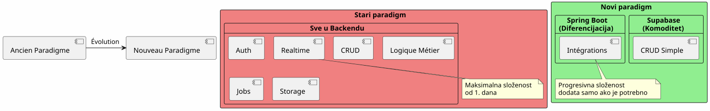
Osnovni princip:Ne gradite ono što već postoji u obliku usluge. Fokusirajte se na ono što razlikuje vašu aplikaciju.
Правило 80/20
U većini aplikacija:
-
80% операцијаsu standardni CRUD → Supabase
-
20% operacijaпотребна је пословна логика → Spring Boot
Ovo prirodno pravilo objašnjava hibridnu arhitekturu.
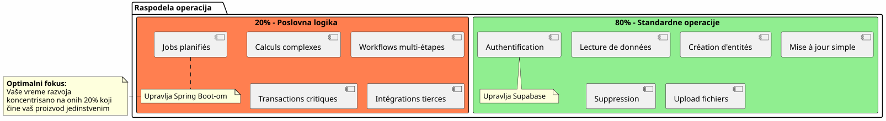
Konačan zaključak
Hibridna arhitektura nije tehnički kompromis, to jestrategijska odluka.
Omogućava vam da:
-
✅ Pokreniti brzo sa funkcionalnim MVP-om
-
✅ Potvrdite svoje tržište bez teških ulaganja
-
✅ Постепено развијај се када сложеност захтева
-
✅ Kontroliši svoje troškove u svakom koraku
-
✅ Korisiti najbolje od svake tehnologije
-
✅ Izbegavati prematurno prekomerno inženjerstvo
-
✅ Зачувати fleksibilnost za budućnost
Она представља:
-
🎯pragmatizamSvaka tehnologija u kojoj izrinjuje
-
🚀Brzina: minimalno vreme do tržišta
-
💰Економија: Troškovi usklajeni sa vrednošću
-
🔮СкалерностArhitektura koja raste sa vama
-
🛡️jačost: проверене и pouzdане услуге
Ваш следећи корак
Ako vam ova arhitektura govori, ovde je gde da počnete :
-
Kreirajte nalog Supabase(besplatno)
-
Определите свој минимална шема података
-
Настројите OAuth2 аутентификацију
-
Napravite svoju prvu JBake stranicu koja koristi API
-
Примењите на GitHub Pages
Imat ćete funkcionalni MVP uнеколико дана.
Spring Boot će se pojaviti prirodno kad ga budete potrebovali. Ne pre toga.
Hibridna arhitektura je umetnost da se konstruiše tačno što je potrebno, kad je potrebno.
Srećan razvoj! 🚀
Podijelite ovaj članak ako mislite da može pomoći drugim programerima da donose pravilne arhitekturnе odluke.
Повезани чланци
18 May 2026